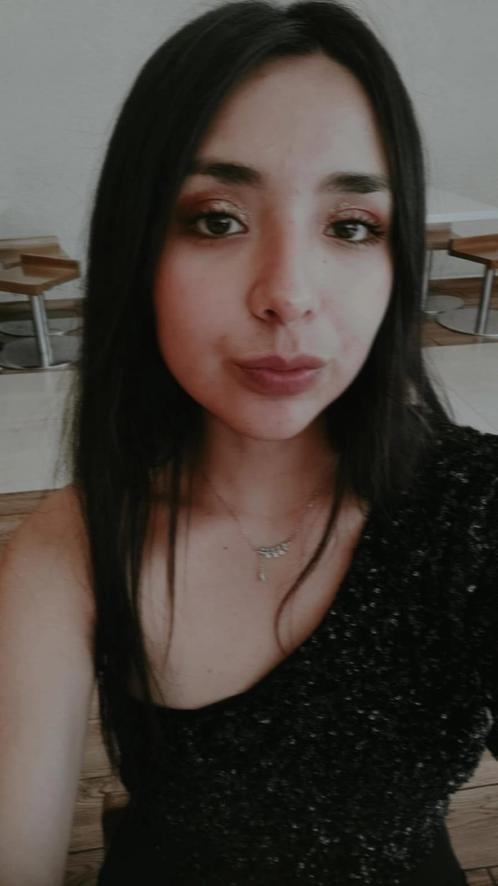

Angeles Susan Fernandez Velazco
Edad: 16 años
Fecha de Nacimiento: 24 de Enero del 2008
Colegio: Eugenia Ravasco
Curso: 5º Secundaria Rojo
Este tutorial fue creado para ayudarte a entender tu cuerpo
y tener un seguimiento preciso de tu ciclo y obtener recomendaciones.